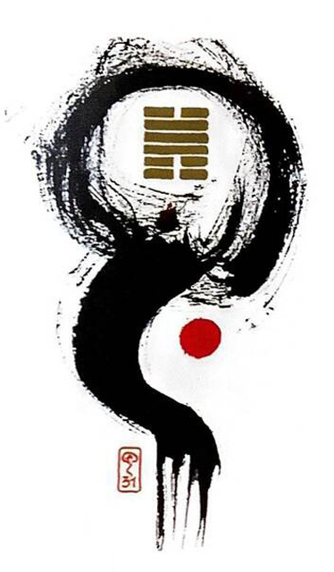

택산함
소길 6
(한번을 만나도 느낌이 중요해~)
마음과 마음이 통한다청춘남녀가 느낌을 통해 일체를 이룬다첫사랑의 설렘과 두근거림.흥분의 상황을 표현한 그림
조화.영향력.흥분.연결.접속.진정한 사랑.상호간의 끌림.감성충만.순수한 애정.진실된 교감.소소하게 좋은 일.긍정적.순수
연애운
두근거림.풋풋한 관계
사업운
만족스럽고 즐거움.자아실현을 통한 성취와 행복 동업시 명확한 문서 만들어야 한다.
속마음
썸설레이는 마음.첫 눈에 반한 마음
1년 이상항상 보고 싶은 마음
이별 후빨리 재회를 꿈꾸며 보고 싶은 마음
솔로연애운
새로운 이성 생길 확률 높다
건강운
전염병.성병.감기.호흡기질환.심장병 조심